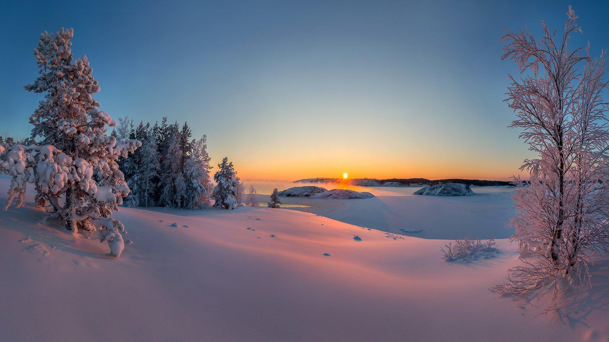

My Travel Footprints: Exploring the Infinite Possibilities of the World
Title description, JAN 1, 2024

This world is so big, there are always many unknown corners waiting for us to discover.
In my travel journey, I have recorded every adventure and shared every beautiful moment.
Whether it's the magnificent mountains and rivers, ancient cultural sites, or the streets and alleys full of exotic charm, they all make me feel incredibly shocked and moved.
I hope that through my sharing, it can inspire your desire and curiosity for the unknown world, and let us embark on the journey of exploration together.
Life Reflection: Cherish Every Present Moment
Title description, JAN 1, 2024
Life is always full of variables and challenges, but it is these experiences that make us more mature and strong.
In my life reflections, I have recorded my thoughts and insights on life.
I have learned to cherish every moment and be grateful for every person and thing around me.
I believe that as long as we feel life with our hearts and experience every moment with our hearts, we can find our own happiness and satisfaction.
About Me

Welcome to my personal website, where I record my growth and share my life insights.
I love traveling and capturing the beauty of the world with my camera; I love writing and enjoy expressing my inner emotions through words.
Here, you can learn about my story and also share your excitement with me. I hope we can find resonance and grow in this small space.
Popular Posts
Here are some of the most popular posts recently, which may take you into my world, experience my life and thoughts. Come and take a look!/p>
《The significance of traveling alone: I found myself in a foreign land》
《Memories of Youth from Those Years: The Days We Passed Together》
《Little Luck in Life: Those Moments That Moved Me》
Image
Description of the image..